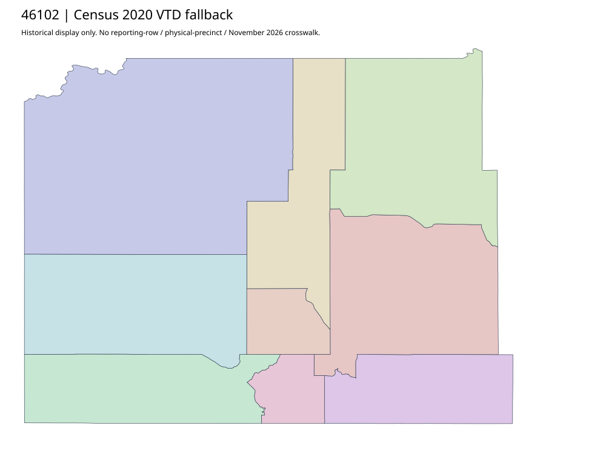

304 ordered indexOglala Lakota | 46102
Official Oglala Lakota Elections parent links acquired complete county and Pine Ridge1/3 area maps. Actual PDFs print January2022. Shared Fall River election-administration links and joint polling location do not prove combined physical territories, voting mode or workbook/current identities.
4 priority / 9 full historical observations. Parent is a summary ancestor, not additive to leaves. No physical feature matches or current reporting crosswalk approved.
Acquired shared-parent assets
map-46102-017-network | complete1-page PDF; all-page contact sheet; complete page1; complete original gzip. Exact reconstruction: python -B scripts/reconstruct.py --id map-46102-017-network /private/tmp/map.pdf
map-46102-018-network | complete1-page PDF; all-page contact sheet; complete page1; complete original gzip. Exact reconstruction: python -B scripts/reconstruct.py --id map-46102-018-network /private/tmp/map.pdf
Census2020 fallback
9 native historical VTD features. Entire785-feature ZIP original retained once, all66 counties. Yankton has one countywide VTD. No current/reporting allocation. complete original gzip

Full binary/attribute/geometry QA
Observed authority/acquisition routes
Complete SOS authority fields including original blank/masked values: parent inventory. No contacts were sent.
Ordered full children
- Sacred Heart Church Hall | 568 source votes | priority
- Sacred Heart Church Hall | 546 source votes | priority
- Brother Renee Hall | 487 source votes | priority
- Little Wound School | 458 source votes | priority
- Christ The King Parish, Bill Pauly Hall | 414 source votes | remainder
- Wound Knee District School Gym | 244 source votes | remainder
- Bill Conquering Bear Gymnasium/Oglala Lakota County Schools | 146 source votes | remainder
- Wakan Tiospaye #12 Community Building | 112 source votes | remainder
- Red Shirt School | 83 source votes | remainder